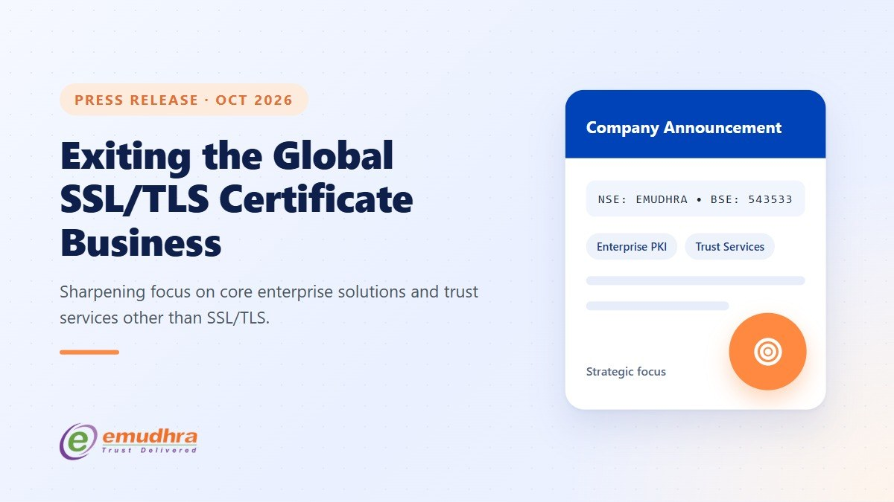
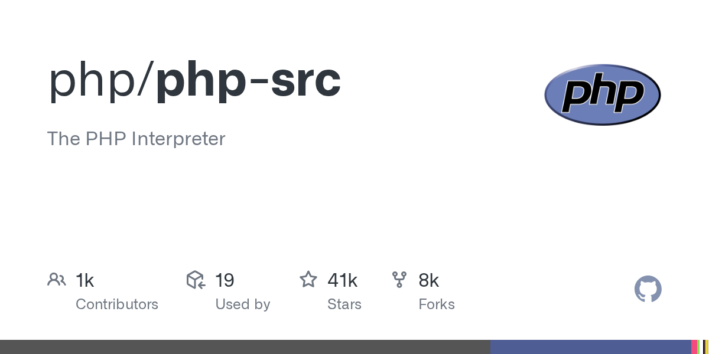
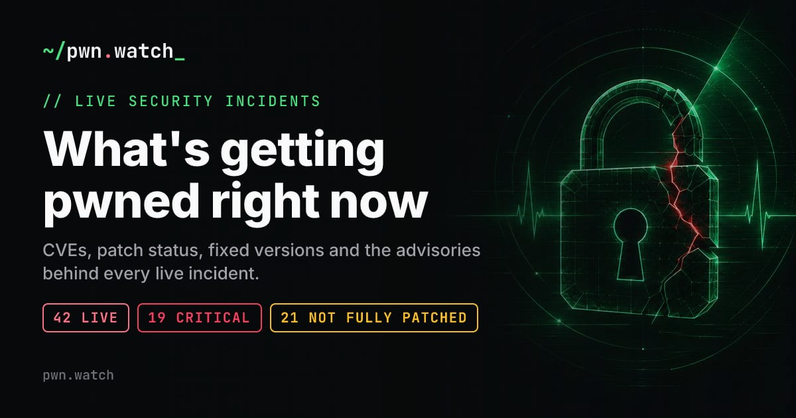
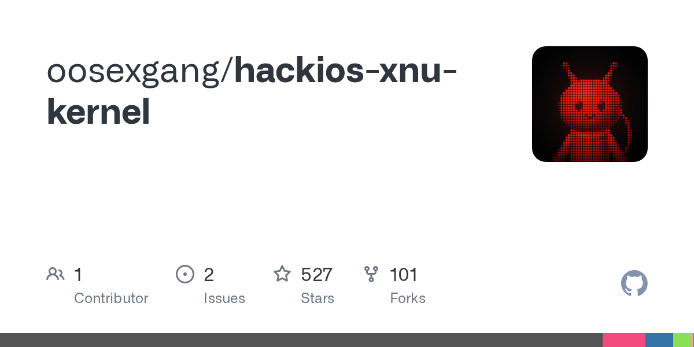

科技日报 | 2026-10-23
2026 年 10 月 23 日 周四 · GitHub Trending + Hacker News
今天的关键词：安全信任危机、Arc 浏览器谢幕、Agent 沙箱
一、GitHub Trending 今日热门项目 TOP 10
1. cloudflare/security-audit-skill —— 给 AI 编程 Agent 装上安全审计眼

🏷️ 基本信息
- 语言：JavaScript
- 总 Star：39,585
- 今日新增：+2,979
- 地址：https://github.com/cloudflare/security-audit-skill
📖 项目介绍
Cloudflare 开源的一个"编程 Agent 技能"：让 AI 编码助手在写代码的同时，自动做多阶段安全审计，输出机器可读的发现报告。
✨ 技术亮点
- 多阶段审计：依赖扫描 → 数据流分析 → 配置检查，分层递进；
- 输出是结构化的、可被 CI/CD 管线直接消费的格式；
- 不是"事后扫一遍"，而是嵌入 Agent 工作流的实时检查。
🎯 适合场景
使用 Claude Code、Cursor 等 AI 编程工具的团队，给 Agent 加一道安全护栏。
📚 学习价值
当 Agent 开始写生产代码，安全审计不能还是人工最后一关。把安全检查变成 Agent 的原生能力，是"AI 写代码"走向"AI 负责代码"的关键一步。
2. DietrichGebert/ponytail —— 让 AI Agent 像"最懒的资深工程师"一样思考

🏷️ 基本信息
- 语言：JavaScript
- 总 Star：173,488
- 今日新增：+1,948
- 地址：https://github.com/DietrichGebert/ponytail
📖 项目介绍
一句话：让 AI Agent 在动手之前先想清楚"这件事是不是可以不做"。
✨ 技术亮点
- 核心理念：最好的代码是你没写的代码；
- 在 Agent 决策链前加一层"懒惰过滤器"：先问"有没有更简单的办法"；
- 连续多日霸榜，说明"少做事"比"多做事"更戳中开发者的痛点。
🎯 适合场景
Agent 任务链过长、容易过度工程的场景。
📚 学习价值
资深工程师的价值不是"写得多快"，而是"知道什么不用做"。把这个直觉编码进 Agent，比给它更多工具更难，也更有价值。
3. Graphify-Labs/graphify —— 把整个代码库变成可查询的知识图谱

🏷️ 基本信息
- 语言：Python
- 总 Star：132,961
- 今日新增：+1,408
- 地址：https://github.com/Graphify-Labs/graphify
📖 项目介绍
把代码库、文档、SQL schema、配置文件、PDF 全部解析成一个可查询的知识图谱。
✨ 技术亮点
- 不只是"向量化后搜索"，而是保留实体间关系；
- 支持跨类型文档：代码 + 文档 + 配置 + 数据库结构；
- 查询时可以沿着关系链走，而不是只做相似度匹配。
🎯 适合场景
大型项目的代码理解、新人 onboarding、跨团队知识共享。
📚 学习价值
RAG 的下一步不是"检索更准"，而是"理解更深"。知识图谱保留了结构化关系，这是纯向量检索做不到的。
4. supabase/supabase —— Postgres 开发平台持续火热

🏷️ 基本信息
- 语言：TypeScript
- 总 Star：113,488
- 今日新增：+693
- 地址：https://github.com/supabase/supabase
📖 项目介绍
Firebase 的开源替代品，核心是一个专属 Postgres 数据库，加上认证、实时订阅、存储、边缘函数等一整套后端能力。
✨ 技术亮点
- 基于 PostgreSQL，不造轮子；
- 开箱即用的 Auth、Realtime、Storage、Edge Functions；
- 社区活跃度极高，插件生态持续增长。
🎯 适合场景
需要快速搭建后端的 Web/移动/AI 应用。
📚 学习价值
"Postgres 能解决大部分问题"——Supabase 的成功证明了这个判断。选技术栈时，选生态成熟的底层，比选花哨的新框架更稳。
5. anthropics/knowledge-work-plugins —— Anthropic 给知识工作者的官方插件包

🏷️ 基本信息
- 语言：Python
- 总 Star：31,610
- 今日新增：+303
- 地址：https://github.com/anthropics/knowledge-work-plugins
📖 项目介绍
Anthropic 官方开源的 Claude Cowork 插件集，面向知识工作者的常见场景：文档处理、数据分析、研究辅助。
✨ 技术亮点
- 官方出品，与 Claude 的集成度最高；
- 覆盖知识工作的核心场景，不是玩具 demo；
- 开源意味着可以二次开发和自定义。
🎯 适合场景
日常用 Claude 做文档、研究、分析的知识工作者。
📚 学习价值
模型公司开始自己做"最后一公里"的应用层。这对中间层的 AI 应用公司是一个信号：你的插件价值，可能正在被上游吞噬。
6. php/php-src —— PHP 解释器源码：因为一个安全漏洞重回 Trending
🏷️ 基本信息
- 语言：C
- 总 Star：41,161
- 今日新增：+287
- 地址：https://github.com/php/php-src
📖 项目介绍
PHP 语言的核心仓库。今天重回 Trending 不是因为新功能，而是因为一个严重的远程代码执行（RCE）漏洞被披露。
✨ 技术亮点
- 与 HN 上"我不小心打破了 PHP RCE embargo"的帖子直接相关；
- 漏洞影响范围广，所有使用受影响版本的 PHP 应用都需要关注。
🎯 适合场景
所有运行 PHP 的服务器。
📚 学习价值
一个 30 年老语言还能爆出 RCE，说明安全审计没有"毕业"这回事。越是基础设施级别的项目，越需要持续的安全投入。
7. luongnv89/claude-howto —— Claude Code 从入门到进阶的可视化教程

🏷️ 基本信息
- 语言：Python
- 总 Star：43,217
- 今日新增：+177
- 地址：https://github.com/luongnv89/claude-howto
📖 项目介绍
一份面向 Claude Code 的实战指南：从基础概念到高级 Agent 编排，每个知识点都有可复制粘贴的模板。
✨ 技术亮点
- 视觉化、示例驱动，不是干巴巴的 API 文档；
- 模板可以直接用，不需要从零摸索；
- 覆盖 Agent 编排等高级主题。
🎯 适合场景
刚开始用 Claude Code 或想深入理解 Agent 模式的开发者。
📚 学习价值
AI 编程工具的学习曲线不在"怎么用"，而在"怎么用好"。这类教程填补的正是从"能跑"到"用好"之间的鸿沟。
8. Meloong-Git/PCL —— Minecraft 启动器 Plain Craft Launcher

🏷️ 基本信息
- 语言：Visual Basic .NET
- 总 Star：8,701
- 今日新增：+119
- 地址：https://github.com/Meloong-Git/PCL
📖 项目介绍
国内 Minecraft 社区广泛使用的启动器之一，简洁、轻量、功能完整。
✨ 技术亮点
- VB.NET 编写，在 2026 年的 GitHub Trending 上看到 VB.NET 本身就是一种稀缺；
- 社区驱动，长期维护；
- 对 Minecraft 中国玩家来说是最熟悉的启动器之一。
🎯 适合场景
Minecraft 玩家。
📚 学习价值
好的工具不一定要用最流行的语言。解决真实需求的工具，自然会找到自己的用户。
9. fastapi/fastapi —— Python 高性能 Web 框架
🏷️ 基本信息
- 语言：Python
- 总 Star：103,754
- 今日新增：+101
- 地址：https://github.com/fastapi/fastapi
📖 项目介绍
Python 生态里增长最快的 Web 框架，基于类型提示自动生成 API 文档和参数校验。
✨ 技术亮点
- 性能接近 Go/Node.js，开发体验保持 Python 的简洁；
- 原生支持 async/await；
- 自动 OpenAPI 文档，省去大量手工维护。
🎯 适合场景
AI 应用后端、微服务、快速原型。
📚 学习价值
FastAPI 的持续热度说明：开发者要的不是更多功能，而是更少的样板代码。
10. NVIDIA/OpenShell —— 给自主 AI Agent 一个安全的沙箱运行时

🏷️ 基本信息
- 语言：Rust
- 总 Star：14,863
- 今日新增：持续上榜
- 地址：https://github.com/NVIDIA/OpenShell
📖 项目介绍
NVIDIA 开源的 AI Agent 安全沙箱：让 Agent 在一个隔离的、可控的环境里执行操作，防止越权或意外副作用。
✨ 技术亮点
- 用 Rust 编写，内存安全 + 性能；
- 基于 Linux 内核安全机制（Landlock 等）做隔离；
- 专为 Agent 设计：不是通用容器，而是理解 Agent 需要"调用工具、访问文件、执行代码"的场景。
🎯 适合场景
部署自主 Agent 的企业，尤其是需要合规审计的场景。
📚 学习价值
Agent 越强大，"出错时的爆炸半径"就越大。OpenShell 代表的是一个趋势：Agent 安全不是附加功能，而是基础设施。
二、Hacker News 今日热榜 TOP 10
统计窗口：北京时间 2026-10-23 00:00 至发稿时，按 points 排序并去重。
1️⃣ Quad9 宣布退出法国：DNS 隐私服务的"主权困境"
Quad9 是一个免费的 DNS 解析服务，主打隐私保护和安全过滤（自动拦截已知恶意域名）。它由非营利组织运营，服务器分布在全球。
现在它宣布将关闭在法国的节点，原因是法国的新法规要求 DNS 运营商承担内容审查义务，这与 Quad9 的隐私承诺根本冲突。
为什么这条新闻拿到近 1000 分：它触碰了一个核心矛盾——政府要求互联网基础设施做"看门人"，而基础设施的设计初衷是"中立管道"。当两者不可调和，服务只能选择退出。
这不是 Quad9 第一次因为类似原因退出某个国家。趋势正在加速：DNS 隐私服务正在被各国的内容审查法规逼到墙角。
2️⃣ eMudhra 退出全球 SSL/TLS 证书业务：信任链的又一道裂痕

eMudhra 是印度最大的证书颁发机构（CA）之一，也是全球主要的 SSL/TLS 证书供应商。它刚刚宣布：退出全球 SSL/TLS 证书业务。
这条新闻的背景是：就在几天前，eMudhra 的中间 CA 密钥被破解，导致大量已签发的证书被标记为不可信。这次事件的信任损害显然是压倒性的。
为什么重要：SSL/TLS 证书是整个 HTTPS 信任链的基础。当一个主要 CA 因为安全事故失去市场信任，影响的不只是它自己的客户——整个证书生态的集中度风险再次暴露。
HN 上 623 条评论里，很多人在问：如果一家 CA 被攻破就能动摇数百万网站的信任，这个体系是不是本身就太脆弱了？
3️⃣ Switch 2 被纯软件越狱：利用 SmileBASIC 解释器
安全研究者 pepsipu 发布了 ns2jb：第一个适用于 Nintendo Switch 2 的纯软件越狱方案。
几个关键点：
- 适用于 固件 23.0.1（最新正式版）；
- 不需要硬件改装芯片，纯软件利用；
- 利用的是 Switch 2 对初代 Switch 游戏的兼容机制中的 SmileBASIC 4.4.9 解释器；
- 非永久性：重启后需要重新触发。
为了展示能力，pepsipu 用它修改了 Switch 2 独占的《马里奥》游戏。
为什么值得关注：这是 Switch 2 发售以来的第一个公开软件越狱。它证明即使是最新的游戏主机，兼容层依然是最大的攻击面之一。
4️⃣ 她从没用过 Cash App，却要为别人开的账户坐 6 年牢
宾夕法尼亚州的 Amanda Smith 从未注册过 Cash App。但有人用她的身份开了一个账户，进行了约 1000 美元的欺诈交易。
结果：她被逮捕，关了三晚，面临最高 6 年的欺诈罪指控。
她的辩护很简单：这不是她做的。但检方的逻辑是：账户是用她的身份信息开的，所以她要负责。
这条新闻拿到 488 条评论，几乎一边倒地愤怒：
- 身份盗窃的受害者反而成了被告；
- 金融平台在身份验证上的失败，成本却转嫁给了最无辜的人；
- "证明不是你做的"比"证明是你做的"难得多——这是一个系统性的举证倒置问题。
5️⃣ What Is Gridification：音乐理论的新概念引发讨论
一篇来自 Substack 的文章，提出了 "Gridification" 的概念——把音乐理论中的时间、音高、节奏等维度"网格化"，用一种更结构化的方式来理解和创作音乐。
397 分、198 条评论，讨论从音乐理论延伸到"所有创造性领域是否都在经历某种网格化"——从绘画的像素网格到写作的结构模板。
6️⃣ "我不小心打破了 PHP RCE 禁令，我很抱歉"

一位安全研究者发了一篇 Tell HN 帖子，讲述自己如何在不知情的情况下违反了一个 PHP 远程代码执行（RCE）漏洞的 embargo（禁运期）。
背景是：安全研究社区在发现严重漏洞后，通常会约定一个"禁运期"——在给厂商足够时间修复之前，不公开漏洞细节。这位研究者在某个操作中意外触发了漏洞，导致它提前暴露。
为什么值得关注：这不是一个技术故事，而是一个安全研究伦理故事。Embargo 机制依赖的是研究者的自律，但在漏洞越来越多、修复越来越慢的今天，这个机制正在承受越来越大的压力。
7️⃣ pwn.watch：实时追踪"正在被攻破的东西"

一个名为 pwn.watch 的新网站冲上 HN：它实时聚合和展示当前正在被利用的安全漏洞。
337 分，159 条评论。评论区的讨论集中在：
- 这类工具对安全团队非常有价值，但也可能被攻击者利用；
- "公开漏洞利用状态"本身就是一种双刃剑；
- 有人把它比作"安全领域的天气雷达"。
8️⃣ 在安卓手机上跑完整的 iOS 16.5 固件

一个名为 hackios-xnu-kernel 的项目：在 Android 设备上运行完整的 iOS 16.5 固件，不是模拟器，而是直接运行 XNU 内核。
318 分，121 条评论。技术上非常硬核——涉及 XNU 内核的移植和适配。评论区有人称之为"我见过的最疯狂的跨平台项目之一"。
9️⃣ Jared Kushner 被黑手机曝光秘密谈判和数百万美元交易
Vanity Fair 发布了一篇重磅报道：据称荷兰政府黑入了 Jared Kushner 的手机，监控了他访问一个迪拜银行账户的过程。报道涉及超过 7 亿美元的交易和与以色列、阿联酋、沙特之间的秘密安排。
Kushner 方面回应称报道"完全疯狂"并予以否认。
299 分、122 条评论。HN 的讨论集中在国家级别的黑客行动与政治透明度的交叉地带。
🔟 NVIDIA OpenShell：给 AI Agent 一个安全的"笼子"

NVIDIA 开源的 OpenShell 项目也登上了 HN。它是一个用 Rust 编写的AI Agent 安全沙箱运行时，让 Agent 在隔离环境中执行操作。
288 分、150 条评论。讨论集中在：
- Agent 越来越自主，但"自主"和"安全"之间的张力越来越大；
- 沙箱是不是够用的问题：Agent 的"工具调用"本质上需要访问外部资源，隔离到什么程度才算安全？
- 有人称之为"Agent 时代的 Docker"。
三、Arc 浏览器正式告别

今天一条额外的新闻：Arc 浏览器宣布将于 2026 年 12 月 22 日停止运行。
Arc 曾是近年来最有创意的浏览器项目——侧边栏标签页、空间（Spaces）、命令栏、画中画……它重新定义了"浏览器可以长什么样"。
但在被 Atlassian 收购后，Arc 进入了维护模式。今天，它正式发布了告别页面。
为什么值得记住 Arc：它证明了一件事——用户对浏览器的不满是真实存在的。Chrome 太臃肿、Safari 太封闭、Firefox 太慢——Arc 试图找到一个不同的答案。虽然它没有走到底，但它留下的设计理念（标签管理、空间切换、快捷操作）已经被很多其他产品借鉴。
四、今日趋势观察
1. 安全信任链正在多处同时断裂
Quad9 退出法国、eMudhra 退出证书业务、PHP RCE 漏洞、pwn.watch 上线——今天的 HN 前十里，至少 4 条直接与安全相关。
不是安全漏洞变多了，而是信任基础设施的维护成本正在超过参与者的意愿。CA 退出、DNS 服务退出、研究者打破 embargo——这些都是信号。
2. Agent 安全从"应该做"变成"必须做"
NVIDIA OpenShell 同时上了 GitHub Trending 和 HN。Cloudflare 的安全审计技能连续多天霸榜。ponytail 的"懒惰工程师"理念本质上也是在减少 Agent 的过度行为。
Agent 的下一个竞争维度不是"能做什么"，而是"能安全地做什么"。
3. 身份验证的系统性失败
Cash App 事件不是个案。当金融平台用"谁的身份"而不是"谁的行为"来做风控，身份盗窃的受害者就会变成被告。举证责任的分配方式，决定了系统对谁友好。
4. Arc 的告别：创新产品的"收购陷阱"
Arc 的故事再次证明：被大公司收购对创新产品来说不一定是好事。收购方的战略优先级会变，产品会进入维护模式，最终被关停。对于用户来说，把核心工作流押注在一个可能被收购的小团队产品上，本身就是一种风险。
数据来源
- GitHub Trending：https://github.com/trending?since=daily（2026-10-23 上午抓取）
- Hacker News：hn.algolia.com，北京时间 2026-10-23 00:00 至发稿时，按 points 排序并去重
- 图片：GitHub OpenGraph 卡片 + 各站点 og:image
日报由自动化管线生成，数据以原始链接为准。